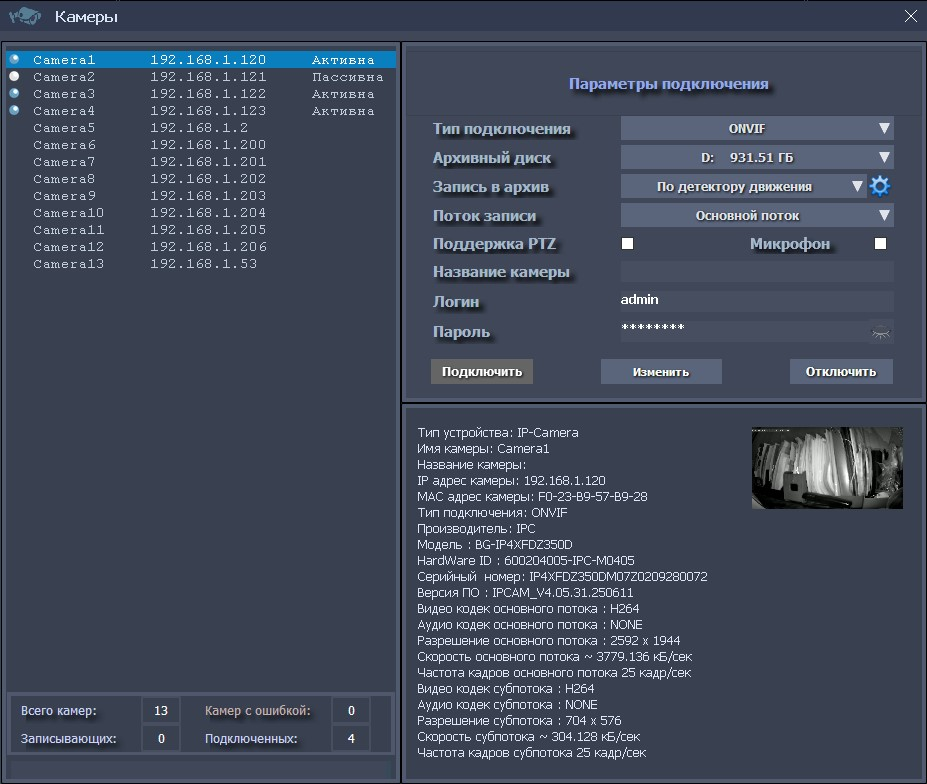
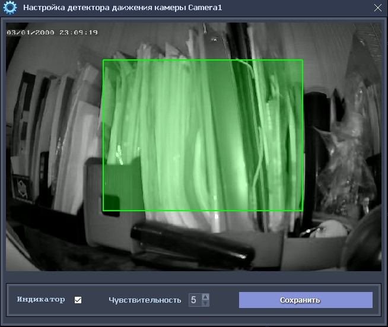
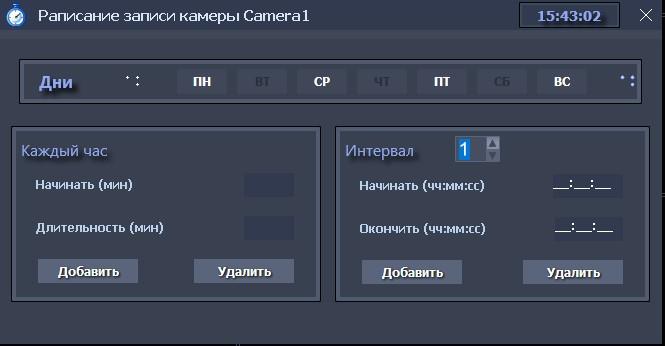
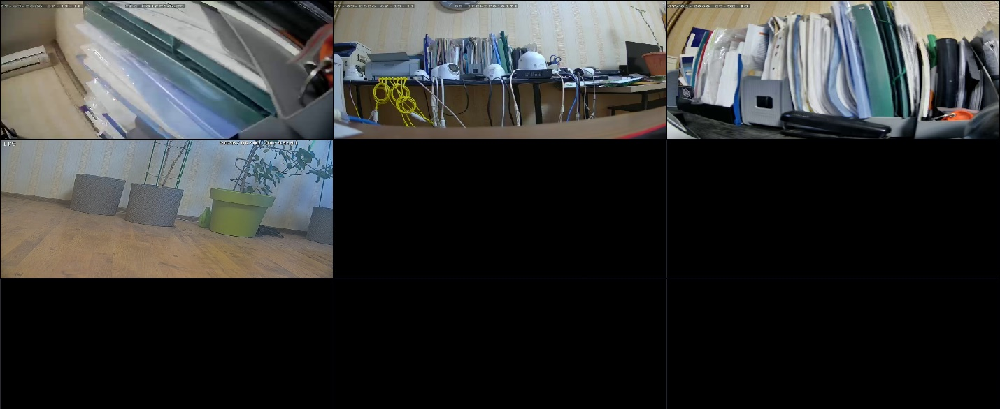
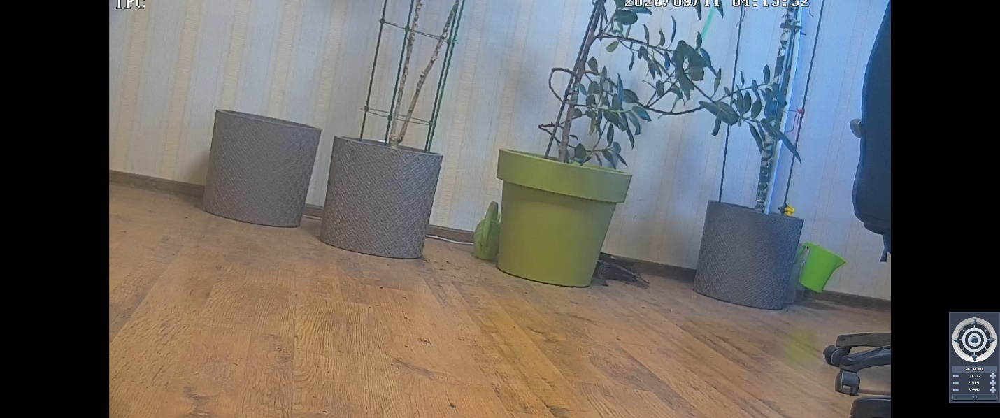

Форма «Камеры»
Форма «Камеры»
Эта форма предназначена для подключения найденных видеоустройств: ONVIF камер, каналов видеорегистраторов и RTSP трансляций от различного рода сервисов или камер, не поддерживающих технологию ONVIF.

Список найденных устройств, располагается в левой части формы, а ниже под ним предоставлена актуальная оперативная информация о состоянии камер (всего камер, записывающих, подключенных, камер с ошибкой). В списке найденных устройств, содержится информация об имени камеры, ее IP адресе и состоянии (Активна, Пассивна, Ошибка).
Также, у каждой подключенной камеры в списке присутствует иконка, индицирующая цветом ее состояние:
голубой – камера активна, но в данный момент не пишет (например, камера ведущая запись по детектору движения или по расписанию);
зеленый – камера активна и производит запись;
серый – камера пассивна (например, при изменении настроек камеры);
красный – камера с ошибкой (например, неисправность оборудования или обрыв линии связи.
В правой части экраны расположены элементы управления подключением камер:
Выпадающий список «Тип подключения», предлагает возможность подключения по протоколу ONVIF или RTSP.
Выпадающий список «Диск архива» позволяет выбрать диск компьютера или сетевой диск, для записи и сохранения архива выбранной камеры;
Выпадающий список «Запись в архив», предлагает возможности записи выбранной камеры: запись «По детектору движения», «Непрерывная запись», «Без записи», запись «По расписанию», запись «По расписание и движению».
Выпадающий список «Поток записи» предлагает выбор потока камеры для записи в архив: «Основной поток» или «Субпоток» (вспомогательный поток).
Флажок «Поддержка PTZ» необходимо установить (выбрать) при использовании поворотной (PTZ) камеры. При не активном состоянии этого флажка, PTZ функции для камеры будут недоступны;
Флажок «Микрофон» необходимо установить (выбрать) при использовании камеры со встроенным или подключаемым микрофоном, если присутствует необходимость записи в архив аудио, канала камеры;
В поле «Название камеры», можно ввести (не обязательно) присвоенное ей произвольное название (например, «Камера на входе в офис»);
Поля «Логин», «Пароль» должны четко соответствовать установленным на камере, для авторизации подключений и изменений параметров камеры.
При выборе в списке «Запись в архив», значения записи «По детектору движения», настройка детектора движения для выбранной камеры,
производится на отдельной форме, открывающейся при нажатии на иконку с «шестеренкой», рядом со списком.
На этой форме можно выбрать требуемую зону детекции движения на кадрах (по-умолчанию, зона детекции весь кадр), включить/отключить показ индикатора движения, установить чувствительность детектора в зоне и сохранить настройки.

При выборе в списке «Запись в архив», режимов запись «По расписанию» или запись «По расписание и движению», необходимо сформировать и само расписание записи. Создание расписания записи конкретного видеоустройства, производится на отдельной форме, открывающейся при нажатии на иконку с «шестеренкой», рядом со списком.

В верхней части формы, устанавливаются дни записи (можно выбрать отдельные дни или группой: «Выделить все дни» или «Снять выделения»).
Для задания времени записи можно использовать комбинацию из нескольких режимов:
режим «Каждый час» запись производится каждый час в ХХ минут, продолжительностью YY минут, например, запись в 17 минут каждого часа продолжительностью 20 минут);
режим «Интервал» позволяет задать до 3-х интервалов записи – «Начинать (чч:мм:сс) (например, в 08:30:00) и «Окончить (чч:мм:сс)» (например, в 12:03:00).
После успешного формирования расписания записи и закрытия окна «Расписание записи камеры», можно приступить к настройки остальных параметров подключения камеры.
При выборе в списке «Тип подключения», в качестве камеры, RTSP поток от внешнего устройства, не поддерживающего технологию ONVIF (обычно это - каналы видеорегистраторов, RTSP трансляции сервисов или IP-камеры, использующие SDK для подключения), в верхней части формы появятся поля ввода «URL_main» «URL_sub», для ввода RTSP ссылок на подключение к потокам (ссылки должны содержать авторизационные данные - логин/пароль). Для каждого из подключаемых RTSP устройств, также, как и для камер, поддерживаются две различные rtsp ссылки – на основной и вспомогательный потоки. При наличии только одной rtsp ссылки у камеры (например, если это поток трансляции сервиса), достаточно ввести ссылку только в поле URL_sub.
По нажатию кнопки «Подключить», камера будет подключена к программной среде «iDLook»: изменится ее отображение в списке найденных устройств, и программа начнет выполнять все требуемые обработки для камеры (отображение на экране, запись в архив, слежение и контроль записи, переключение режима отображения и т.д.). При ошибке задания параметров при подключении, системой будет выдано соответствующее сообщение. Отключение камеры производится нажатием на кнопку «Отключить». В дальнейшем, после отключения, повторное подключение потребует нового задания всех требуемых параметров.
Следует отметить, что при наличии одинаковых параметров настроек записи, архивного диска и параметров авторизации, камеры можно подключать (и отключать) группой. Для этого в списке найденных устройств необходимо выбрать (выделить) все камеры для подключения, используя управляющие кнопки Ctrl и Shift при выделении камер в списке, с помощью мыши. Метод выделения в списке найденных устройств, ничем не отличается от выделения в обычном окне папки со списком файлов, используемый в ОС.
После выделения требуемых камер и задании параметров подключения, можно произвести быстрое подключение выделенной группы камер, нажатием на кнопку «Подключить». Отключение камер группой, производится аналогичным образом. При использовании, способа группового подключения камер, в целях безопасности, рекомендуется задание сложных паролей, т.к. этот способ предполагает использование единой пары логин-пароль для всех камер группы.
Для изменения параметров и перезапуска уже подключенной камеры, необходимо нажать кнопку «Изменить»: при этом камера перейдет в пассивное состояние и запись в архив будет приостановлена, а на кнопке «Изменить», надпись изменится на «Перезапустить». После этого можно произвести все необходимые изменения (например, изменить «Тип подключения» или включить «Микрофон» и т.п.). По окончанию изменений, необходимо нажать на кнопку «Перезапустить» - камера перезапустится и вернется в активное состояние, с новыми параметрами.
В нижней части экран расположена информационная панель, на которой отображаются детализированные сведения о камере, полученные системой при ее подключении.
По окончанию подключения всех камер, рабочий экран будет заполнен их отображением. Все окна отображений камер можно перетаскивать методом Drag&Drop, с помощью мыши. Изменения положения окон камер экране, запоминаются системой и будут использоваться при последующих запусках.

Нажатие правой клавиши мыши на окне отображения любой камеры, вызовет появление всплывающего контекстного меню камеры. Нажатие средней клавиши мыши, вызовет быстрый переход к просмотру текущего архива камеры.
При двойном нажатии левой клавиши мыши (double click) на окне отображения камеры, откроется окно полноэкранного просмотра камеры.
В этом окне камера отображается в режиме высокого разрешения (используется основной поток камеры), со звуком (если камера имеет микрофон).
Кроме того, для поворотных камер, на экране появится и панель управления PTZ.

Закрыть окно полноэкранного просмотра, можно также двойным нажатием левой клавиши мыши (double click) на любой части окна.